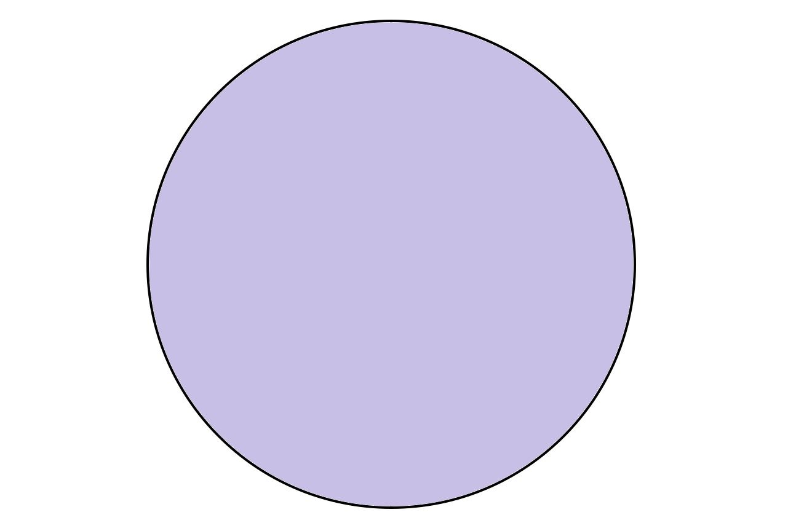
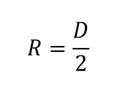
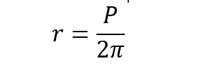
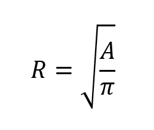

Ahora aprenderemos a calcular el radio de un circulo:

Para calcular el radio de un circulo podriamos usar cualquiera
de estas formulas:
Para calcular el Radio de un circulo apartir del diametro usaremos esta formula:

Ejemplo:
Imagina que tienes un circulo cuyo diametro es de 30 cm y quieres obtener su radio apartir del diametro.
entonces nuestra formula quedara asi:
r = D / 2
A D le daremos el valor de 30cm por lo que nos quedara asi:
r = 30cm / 2 = 15cm
Donde 15cm sera el valor de nuestro radio
Ahora es tu turno intentalo dando click aqui.
Para calcular el radio de un circulo usando su perimetro usaremos esta formula:

Ejemplo:
Ahora es tu turno intentalo dando clickaqui
Imagina que tienes un circulo cuyo perimetro es de 40 cm y quieres obtener su radio apartir del perimetro.
entonces nuestra formula quedara asi:
r = P / 2π
Donde P tiene un valor de 40cm y π(pi) vale 3.1416
r = 40cm / 2 x 3.1416 = 6.3661cm
Donde 6.3661cm sera el valor de nuestro radio
Para calcular el radio apartir del area usaemos esta formula:

Ejemplo
Imagina que tenemos un circulo con un Area de 60cm y queremos calcular su radio partiendo de esta area entoncesnuestra formula quedara asi:
r = √(A / π)
Donde A tiene un valor de 60cm y π(pi) vale 3.1416.
r = √(60cm / 3.1416) = 4.3701cm
Ahora es tu turno intentalo dando clickaqui
Aqui hemos aprendido tres formulas de obtener el valor del radio ya sea conociendo su diametro, conociendo su perimetro o conociendo su area.